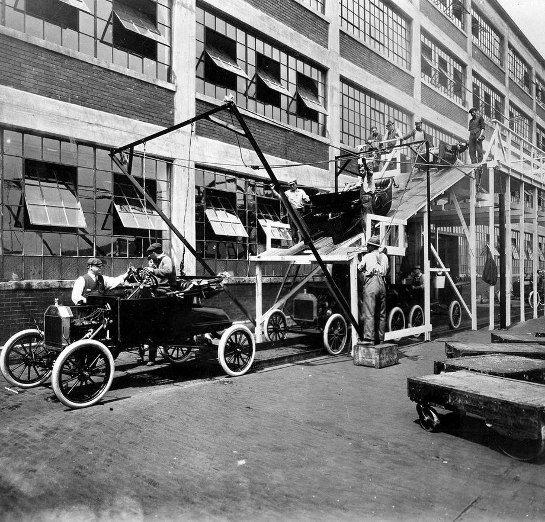
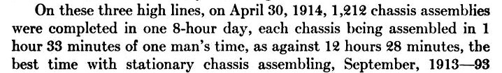
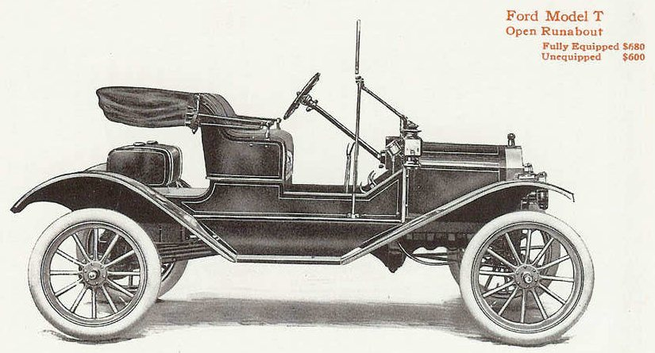

4 · 1913
Mỗi người một động tác
Thử trước ở một khâu nhỏ: lắp magneto chia cho 29 người, từ 20 phút còn 5 phút.

Highland Park, Michigan · 1913
“Một chiếc ô tô cho số đông.”
Henry Ford · My Life and Work, 1922
Muốn bán cho số đông thì xe phải rẻ — mà mỗi khung xe tốn 12,5 giờ công thì không rẻ nổi.
Thử trước ở một khâu nhỏ: lắp magneto chia cho 29 người, từ 20 phút còn 5 phút.
Khung xe được kéo qua từng trạm, linh kiện chờ sẵn; thợ đứng yên một chỗ.
Việc lặp lại làm thợ bỏ đi: năm 1913, giữ 100 chỗ làm phải tuyển 370 người.
giờ
Lắp tại chỗtháng 9 · 1913
phút
Dây chuyền30 · 4 · 1914
Ford Methods and the Ford Shops · 1915 · tr. 161

Nguồn: Arnold & Faurote, Ford Methods and the Ford Shops (1915). Số liệu là giờ công — tổng thời gian của mọi người thợ cho một khung xe.
USD
Cataloguenăm 1911
USD
Niêm yếtnăm 1924

Nguồn: catalogue Ford 1911 · giá niêm yết từ 12 · 1923. Cả hai chưa có máy đề, cùng cấu hình.
“Bước tiến đầu tiên là khi chúng tôi đưa việc tới người, thay vì đưa người tới việc.” Henry Ford, 1922 · bản dịch
Mỗi lần hạ giá, xe bán nhiều hơn và chi phí chia trên mỗi chiếc lại giảm. Riêng năm 1923: 2.011.125 chiếc (chưa tính Canada).
Đừng bắt người làm nhanh hơn.
Hãy tìm chỗ thời gian đang bị bỏ phí.
từng bước một đơn hàng đi qua, từ lúc nhận tới lúc giao.
bước nào người phải đi tìm đồ, bước nào phải ngồi chờ.
thứ cần dùng tới tận chỗ người làm — như Ford đưa khung xe tới thợ.